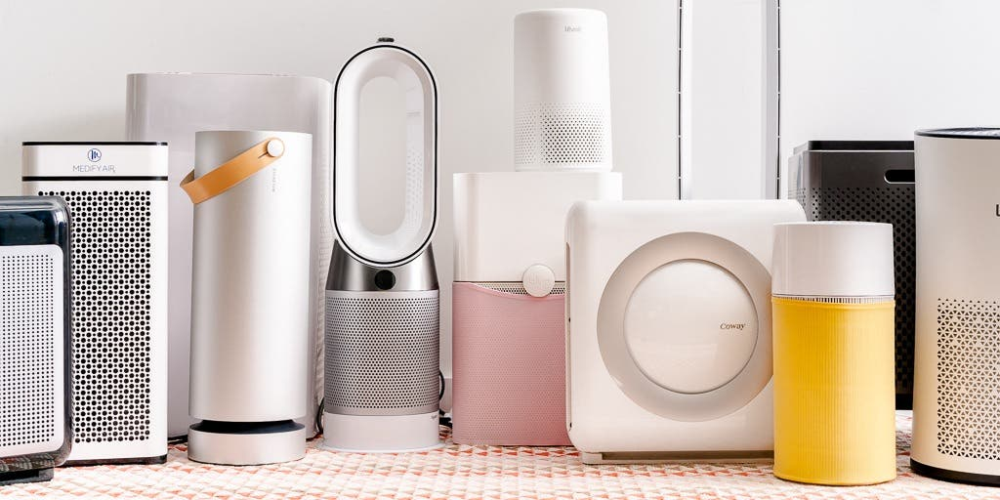

The 13 Best Dandruff Shampoos to Soothe Itchy, Flaky Scalps, According to Dermatologists
Experts share their go-to products for getting rid of flakes.
By Anthea Levi and Amina Abdelrahman
Updated September 24, 2021
Each product we feature has been independently selected and reviewed by our editorial team. If you make
a purchase using the links included, we may earn commission.
From the telltale itchy scalp to white flakes on your dark sweater, there's no doubt about it dandruff
is a pain. The good news: Over the counter shampoos can help remedy the chronic skin condition, which
affects nearly 50% of people worldwide.
RELATED: The 11 Best Shampoos for Hair Growth, According to Experts and Reviews
Because there are so many variations of dandruff shampoos on the market, it can be hard to tell the
difference between them all. That's why we reached out to experts to find out exactly what to look for
when shopping for dandruff shampoos, along with their recommendations on which ones are actually worth
buying.
The Best Air Purifiers for Allergies, and How to Pick the Right One for Your Home

Breathe easier at home with a HEPA air purifier, which will clear dust, smoke, VOCs, and other allergens
from the air.
By Julia Naftulin and Emily Belfiore
Updated August 30, 2021
Each product we feature has been independently selected and reviewed by our editorial team. If you make
a purchase using the links included, we may earn commission.
You may consider your home a safe haven from allergens. But get this: Even though you can't necessarily
tell by looking at it, indoor air is often twice as polluted as outdoor air thanks to dust, mold, and
chemicals that accumulate in the enclosed space over time. That's why experts recommend investing in an
air purifier, which is known for filtering out allergens from your home and enhancing the quality of
your breathing air.
"Some things like dust mites might only be in the air for 20 to 30 minutes, but if something floats
around for hours, like cat antigen, dog antigen, cockroaches, or mold, you want an air purifier on to
trap it," says Timothy Craig, DO, a professor at Penn State's Center for Allergy, Asthma, and
Immunology. Volatile organic compounds (VOCs), which are gasses from cigarette smoke, paints, furniture,
copiers, cleaning supplies, and dry-cleaned clothes can also lead to symptoms of "sick building
syndrome," like headaches and fatigue.